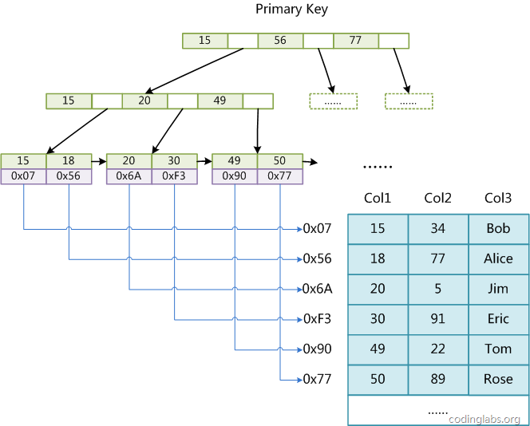
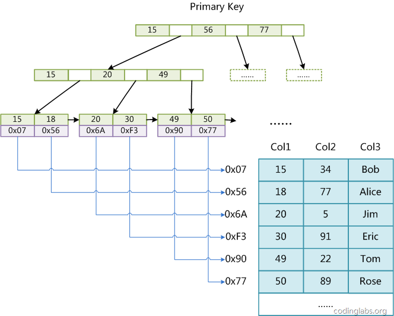

MyISAM和Innodb引擎的索引是怎么实现的
MySQL有多种存储引擎，所使用的存储引擎都是多种多样，但MyISAM和Innodb的索引数据结构都是基于B+树！
但MyISAM的索引和Innodb的索引还是有些许不同。
MyISAM的索引实现
MyISAM引擎使用B+Tree作为索引结构，叶节点的data域存放的是数据记录的地址。下图是MyISAM索引的原理图：
 
在MyISAM中，所有的索引都是这样存储的，只有组合索引、单字段索引、唯一性索引几种索引概念，没有聚集索引！
Innodb的索引实现
Innodb引擎使用B+Tree作为索引结构，叶节点的data域存放的是数据记录或者数据记录的主键。存放数据记录的索引是聚集索引，只能有一个，存放主键的索引可以有多个，叫做非聚集索引，下图是Innodb的聚集索引的原理图：

如果Innodb的主键是非聚集索引，因此如果主键不作为聚集索引（主键只是普通的唯一性索引）那实际上会经历两次查询，严重降低查询性能。这也是为什么很多情况下，MyISAM的读取更高效的原因之一。
为什么MyISAM和Innodb的索引使用B+树
1.索引文件很大，不可能全部存储在内存中，故要存储到磁盘上
2.索引的结构组织要尽量减少查找过程中磁盘I/O的存取次数（为什么使用B-/+Tree，还跟磁盘存取原理有关。）
3.B+树所有的Data域在叶子节点，一般来说都会进行一个优化，就是将所有的叶子节点用指针串起来，这样遍历叶子节点就能获得全部数据。
聚集索引注意事项
聚集索引一个表只能够有一个，MySQL的 聚集索引默认建立在主键上，可以显示指定在其它字段或者其它多个字段上。
聚集索引和除了data节点，和普通索引是一样的，聚集索引因为是物理顺序，所以对于范围查询特别有效果！
聚集索引妥善使用，当使用多个字段作为聚集索引时，一定要把最频繁查询的字段放在前列，聚集索引如果按照字段的先后顺序查，那能够有效果，否则没有效果！
索引的最左前缀原理
索引是可以比较大小的，当使用where name like '张%'是能够使用到索引的，但是使用where name like ‘%小明’没有效果的。
为什么Innodb最好在自增主键上建立聚集索引
这个还是看具体的需求，如果真的需要特别多的查询，但插入很少的话（只读数据表），还是建议使用频繁的业务字段作为聚集索引
之所以在自增主键上使用聚集索引，是因为插入数据时，可以直接插到叶子节点的最右端，避免寻找插入位置和移动数据。